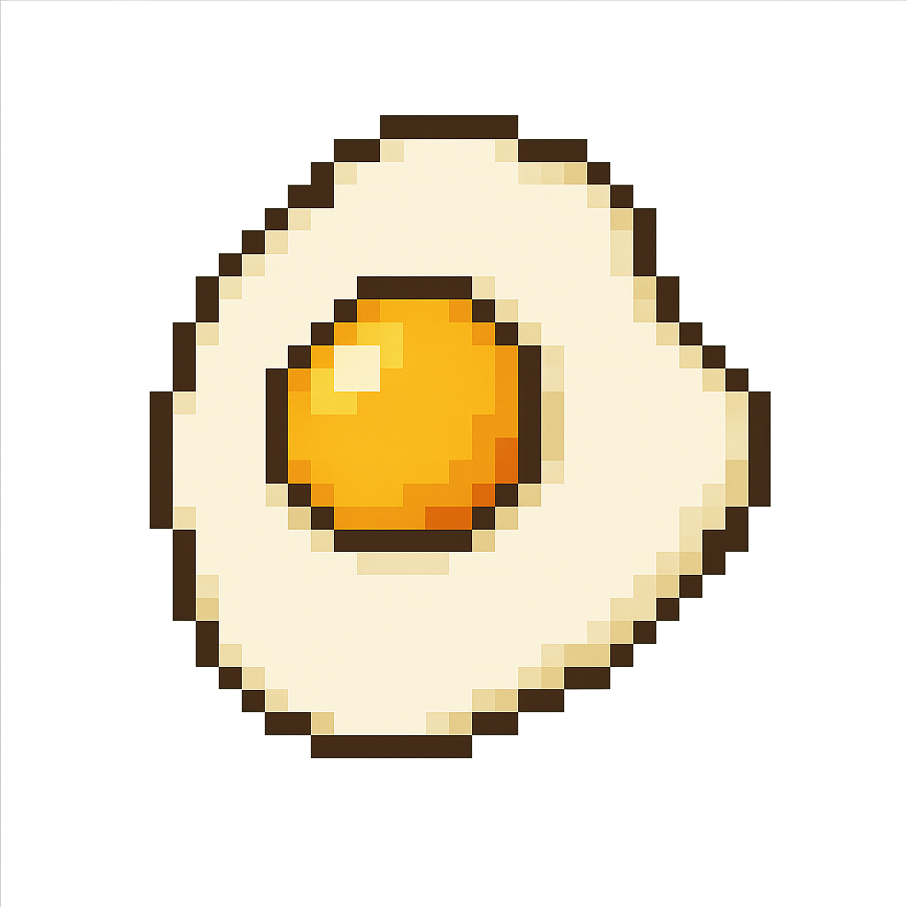

アクセス数：読み込み中…
🍳 おいしい目玉焼きの作り方 - v1.5

材料（1人分）
卵 … 1個
油 … 小さじ1（サラダ油でもごま油でもOK）
塩 … ひとつまみ
作り方
フライパンを中火で温め、油を入れます。
油が熱くなったら、卵をそっと割り入れます。
白身が固まりはじめたら、弱火にしてフタをします。
黄身の表面がうっすら白くなったら火を止めます。
お好みで塩をふって、できあがり！
仕上げに塩コショウ、しょうゆ、マヨネーズをトッピングしてもおいしいです。
ワンポイントアドバイス
水を少し加えて蒸し焼きにすると、白身がふっくら仕上がります。
フタをせず「サニーサイドアップ（片面焼き）」にするのもおすすめ。
🥚 目玉焼きを数えるゲーム
スタート
答える
🥚 目玉焼きぷよぷよ
画面のボタンで操作。スコア表示とNEXT表示付き
スコア:
0
一時停止
NEXT
←
→
↓
ゲームオーバー！
リスタート